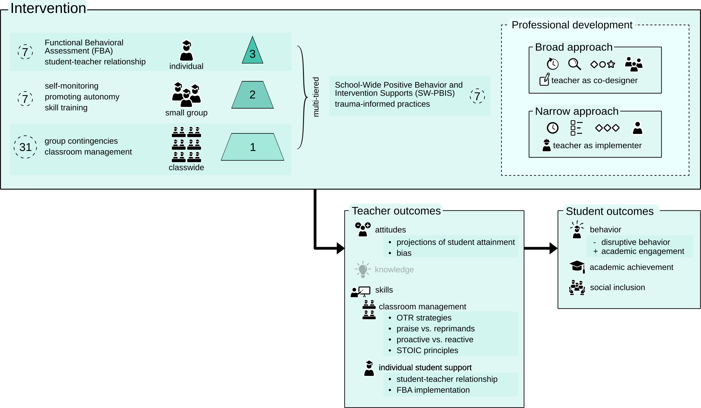

Poster

Managing externalizing behavior is a significant challenge, especially in secondary education. Externalizing behavior can negatively impact student well-being, and academic performance, and is a stressor for teachers, potentially leading to burnout and attrition.
There is a range of interventions that teachers can implement. However, teachers often hold negative attitudes towards students with behavioral problems and frequently lack knowledge and skills needed to implement interventions with confidence. Teacher support within these interventions is therefore crucial!
In this study, we explore how professional development (PD) is designed within interventions aimed at students’ externalizing behavior. We aim to identify key factors that enhance teachers' attitudes, knowledge, and skills in managing externalizing behavior.
This review analyzed 51 studies on professional development (PD) within interventions aimed at students’ externalizing behavior. Using the MTSS model and Desimone's PD framework, we examined how PD is designed and what factors enhance teachers' attitudes, knowledge, and skills in managing student behavior.
We identified two distinct PD approaches: a ‘narrow’ and a ‘broad’ approach. The 'narrow' approach is characterized by short-term support, minimal implementation of effective PD features, and positions the teacher merely as an implementer of the intervention. In contrast, the 'broad' approach fosters sustainable, collaborative practices that engage teachers as co-designers of interventions.
Additionally, only a minority of studies focused on teacher outcomes. Most studies described effectiveness through student outcomes alone. The mechanisms through which these interventions work remain a black box.
Key findings emphasize the need to explicitly measure teacher outcomes in intervention research. Practical implications include the use of comprehensive school-wide approaches, with a broad approach to PD and alignment with teachers' experience to create sustainable change.
